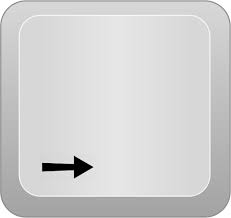
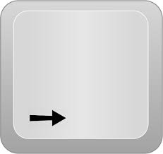

Het was vandaag de voorlaatste dag. En ik begin eindelijk de sfeer te krijgen van Klina op te pakken. En voor iemand stil zoals ik die in een nieuwe omgeving wordt gezet. Dus ik ben wel blij dat ik mijzelf op minder dan 2 weken tijd heb ‘ingewerkt’. Ik heb vandaag de handleiding voor ZORA afgewerkt en doorgemailt naar Sabrina, de verantwoordelijke voor deze robot. En voor de rest nog wat in TOPdesk liggen rondneuzen. Ze hebben me gezegd, eens TOPdesk af is dat ik morgen nog naar de helpdesk mag. En dat zou veel leuker zijn, daar mag ik dingen doen. Ipv de standaard boekhouders zaken in TOPdesk. Voor de rest was mijn dag redelijk normaal. Geen hevige uitvallen naar andere mensen of dergerlijke. Maar het was de voorlaatste dag dus ik denk dat ik morgen met iets ga trakteren omdat ik daar bij hun stage mocht doen. Misschien cake of koekjes, ik weet het nog niet.
Un petit peu de Photoshop jamais ne sera pas mal